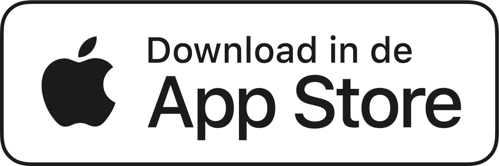
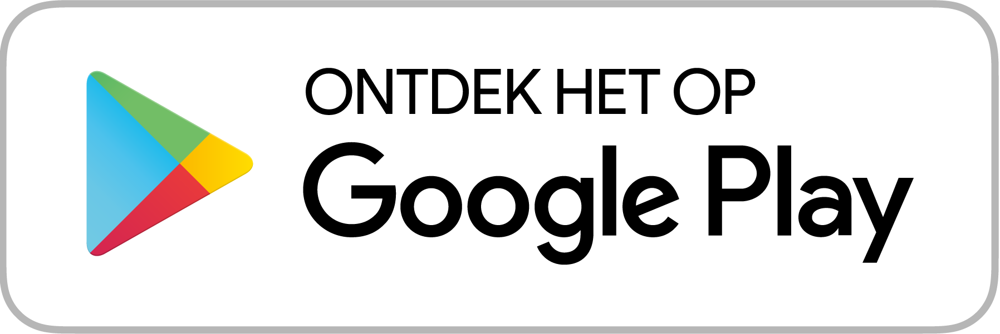

Too Good To Go is een sociale-impact onderneming, met de missie om iedereen te inspireren en te motiveren om voedselverspilling tegen te gaan.
Onze app is 's werelds grootste marktplaats voor overtollig voedsel. We helpen gebruikers om goed voedsel voor een aantrekkelijke prijs te redden van verspilling bij lokale winkels, cafés en restaurants.


Waarom Too Good To Go
- Geniet van lekker eten voor de helft van de prijs of minder
- Red eten bij jou in de buurt
- Help het klimaat door voedselverspilling tegen te gaan
- Probeer iets nieuws van lokale cafés, bakkerijen of restaurants